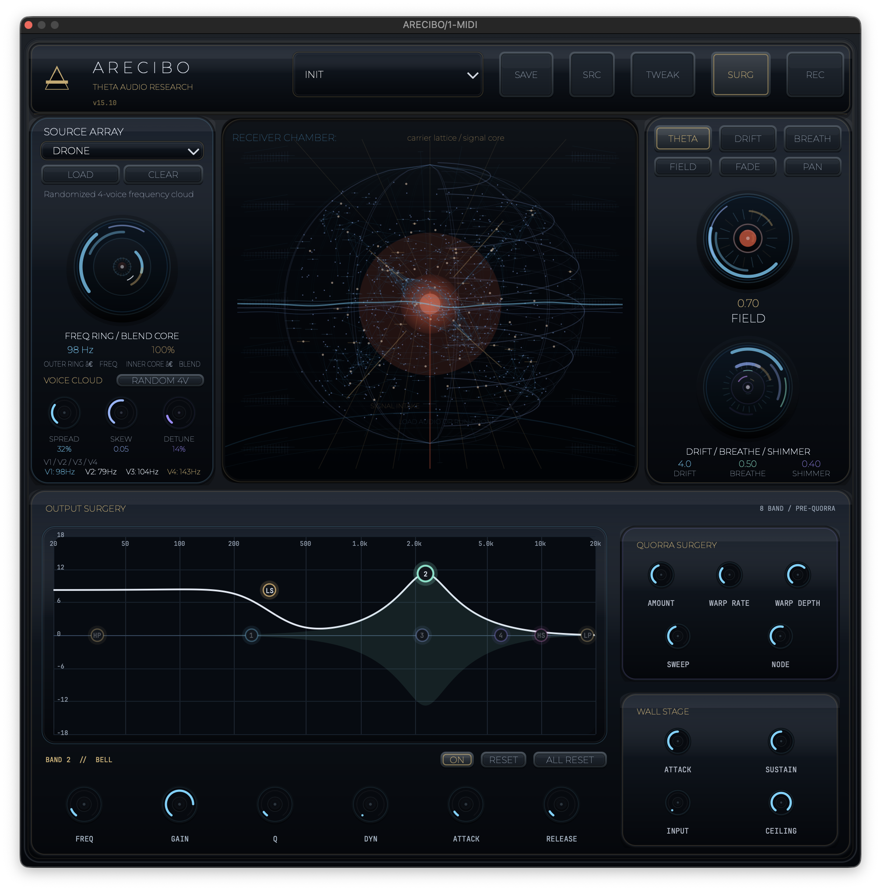

ARECIBO
Interstellar Granular Processor

ARECIBO is a cinematic sound-transformation plugin from THETA Audio Research. At its core is a layered source engine and motion chain that moves through THETA Source Array → DRIFT → BREATHE → FIELD → FADE → PAN. The architecture is built around pre-QUORRA tone shaping, the QUORRA motion engine, and a final Wall Stage for transient control and limiting. Where many plugins give you a list of effects, ARECIBO gives you a system. You can shape frequency before motion, push the signal into QUORRA for shuffle, warp, scan movement, and node-focused character, then control the final impact with a dedicated wall stage. QUORRA is designed as the last major transformation stage before the final limiter, which makes the plugin feel intentional: first shape, then destabilize, then force the result into a controlled boundary. Use it to create spectral movement, unstable harmonics, evolving texture, and cinematic transformation across a single continuous chain. ARECIBO does not just color sound — it steers it.
CORE_SYSTEMS
- Source Array Engine Layered voice architecture with sample-based source capability for deep textural foundations.
- Interstellar Motion Chain Spatial and temporal transformation via DRIFT, BREATHE, FIELD, FADE, and PAN modules.
- QUORRA Transformation Advanced stage for warp, shuffle, doppler-like movement, and node-focused character.
- Pre-QUORRA Shaping Dedicated signal preparation stage to define spectral content before motion processing.
- Wall Stage Architecture Transient shaping and final limiter behavior for clinical impact control.
SIGNAL_INTEL
- Turn static tones into living atmospheres.
- Add cinematic instability to pads, drones, and vocals.
- Shape sound before motion, then push it into controlled collapse.
- Create pressure, blur, drift, and sweep inside one continuous chain.